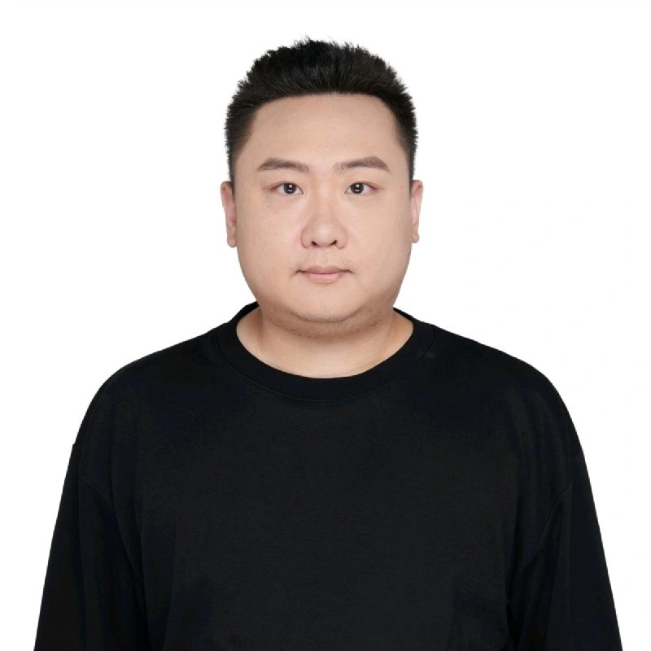

Spectral Methods in Brain Network Analysis
Notes on how graph Laplacian spectra reveal community structure in functional brain networks, with key derivations.
Apr 7, 2026

Ph.D. in Computer Science
TReNDS Center (Georgia State University, Georgia Tech, Emory)
Yuda Bi, statistical physics, information geometry, theoretical neuroscience, spectral graph theory, nonequilibrium thermodynamics, TReNDS Center, Georgia State University
Homepage Visits
I received my Ph.D. from the TReNDS Center (GSU, Georgia Tech, Emory), advised by Prof. Vince D. Calhoun.
In 2025 I pivoted from engineering-driven multimodal neuroimaging toward a theory-first research program grounded in statistical physics, nonequilibrium thermodynamics, and information geometry.
Research Program I study how latent structure leaves faint but principled signatures in data: hidden forcing in stochastic systems, spectral structure in biological molecules, and low-rank geometry in large-scale brain organization.
Methodological Style My work sits at the intersection of statistical manifolds, stochastic thermodynamics, spectral graph theory, and matrix geometry, with an emphasis on compact theory that still leads to concrete empirical tests.
Statistical Physics Information Geometry Nonequilibrium Thermodynamics Theoretical Neuroscience Spectral Graph Theory Financial Physics Structural Biology
Ph.D. in Computer Science, Georgia State University, 2020–2025
M.S. in Computer Science, University of Georgia, 2017–2020
B.S. in Management, Shandong University of Science and Technology, 2013–2017
Current axis Hidden forcing and detectability
Core toolkit Geometry, spectra, and thermodynamics
Application domains Brains, molecules, and market-like collective systems
Output style Papers, technical notes, and open methods
\(D_{\mathrm{KL}}^{\min}(\lambda) = C\,\lambda^4 + O(\lambda^6)\)
Hidden variables are orders of magnitude harder to detect than classical statistics predicts. When a reduced model absorbs the leading perturbation through reparametrization, only the normal residual survives — producing a quartic, not quadratic, detection law. A single probe is provably blind; two probes sharing the hidden driver break the impossibility via cross-spectral geometry.
Four papers under review at Physical Review Letters and Physical Review E.
“The sad truth is that most evil is done by people who never make up their minds to be good or evil.”